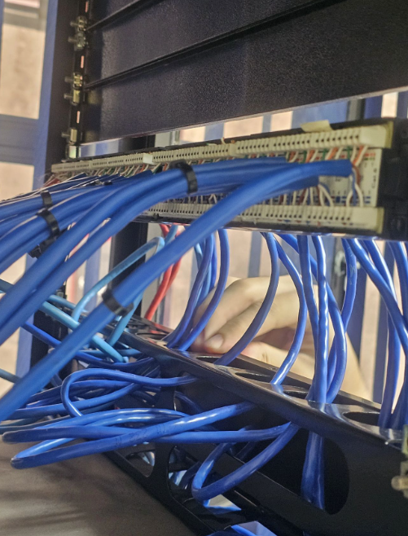
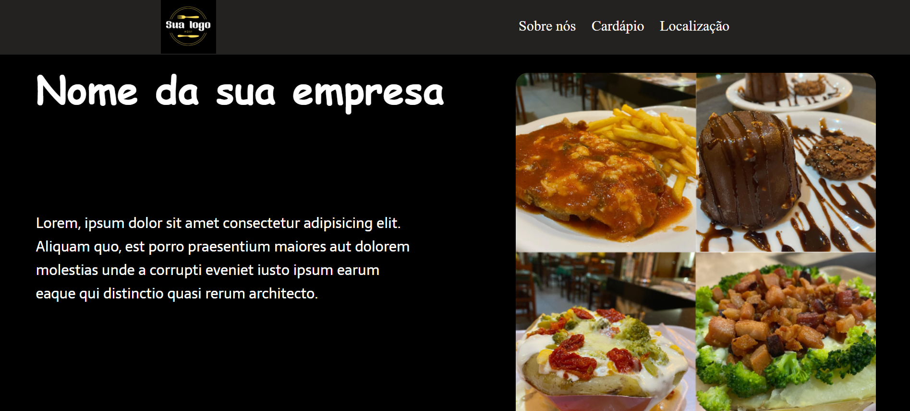

Meus projetos

Em janeiro de 2022 dei início ao programa Jovem Acolhedor, na escola onde estudei. O foco dos acolhedores era desenvolver projetos que de alguma maneira iria contribuir com os alunos e a escola, nosso primeiro trabalho foi desenvolver uma atividade para cativar o auto pensamento crítico dos alunos e refletir em seu projeto de vida. Com isso, desenvolvi a capacidade de trabalhar em equipe, e poder ajudar as pessoas tornando mais fácil a comunicação e proatividade nos trabalhos.
Aplicativo de chamados que desenvolvi para apresentar na ACI (Associação Comercial) de São José dos Campos.

Imagem mostrando o Patch Painel que fiz para ligar em um Switch, este projeto foi desenvolvido na escola SENAI.

Power BI que foi desenvolvido em um projeto para a Petrobras na intenção de coletar dados para contribuir com as comunidades do entorno da refinaria.

Este foi um projeto pessoal que desenvolvi. Trata-se de um site de restaurantes que mostra uma página inicial do estabelecimento junto a uma página de cardápio completa, e por fim uma página de localização com uma API do Open Street Map.
Clique aqui: https://sage-yeot-82d5de.netlify.app/para mais informações.